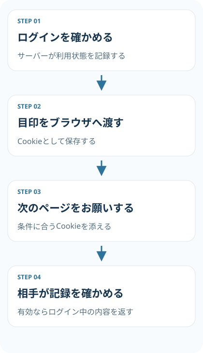

ログインしてから別のページへ移っても、自分の名前が表示される。毎回パスワードを入力していないのに、サイトはどうやって続きだと分かるのでしょうか。使われる仕組みの一つがCookieです。ブラウザに残す目印と、サーバーにある記録を分けながら、ページを移る場面を追ってみましょう。
01 — DIGITAL BASICS
Cookieはブラウザが保存する小さなデータ
Webページを開くと、ブラウザはサーバーへお願いを送り、返事を受け取ります。Cookieは、そうしたやり取りに添えられる小さなデータです。サーバーが返事に保存の指示を付け、ブラウザがそのデータを保存する、という使い方があります。
ブラウザは後の通信で、条件に合うCookieを相手へ送ります。サーバーは届いた値を使って、前の操作とのつながりを確かめられます。ここで大切なのは、Cookieがページの文章や画像そのものではないことです。何に使う値なのかは、そのサイトの設計によって変わります。
02 — DIGITAL BASICS
ログインでは、記録を探すための目印になる
たとえば、サイトが入力された認証情報を確認した後、ログイン中の状態をサーバー側に記録する方式を考えます。ブラウザには、その記録を識別するための値をCookieとして渡します。このように一連の利用状態を扱う仕組みをセッションと呼び、その識別用の値がセッションIDです。
ブラウザが次のページをお願いするとき、Cookieを添えて送ります。サーバーはその値から記録を調べ、まだ有効ならログイン中の内容を返せます。Cookieへパスワードそのものを入れない方式でも、この流れは成り立ちます。図は一つの方式を簡略化したもので、すべてのログインが同じ作りとは限りません。
この節の参考：資料1

03 — DIGITAL BASICS
どこへでも、いつまでも送られるわけではない
Cookieには、送る相手の範囲や保存期間などの条件があります。ブラウザは条件に合わせて扱うため、あるサイトのCookieが、無関係なすべてのサイトへ同じように配られるわけではありません。ブラウザのプライバシー設定などによって保存や送信が制限されることもあります。
ログインが続くかどうかは、Cookieが残っていることだけでは決まりません。サーバー側で記録の有効期限が切れていれば、同じ目印が届いても再ログインを求められる場合があります。「端末にある目印」と「相手が持つ記録」の両方を考えると、仕組みを整理できます。
04 — DIGITAL BASICS
便利さと、扱うときの注意を分けて知ろう
Cookieはログインだけでなく、表示言語などの設定を覚えたり、利用状況を分析したりする用途にも使われます。Cookieという名前だけで、すべてが同じ目的だとは判断できません。何のために使うかと、どの相手が扱うかを見ることが大切です。
また、ログイン状態に結び付く値は、他人へ渡してよい単なる文字列ではありません。Cookieの内容をコピーして共有するよう求められても、安易に渡さないようにしましょう。Cookieを消すとログインが外れる場合があるのも、続きだと示す目印がなくなるためです。画像などを再利用するキャッシュとは役割が違う、と区別して覚えてみてください。
REMEMBER
今日覚えておきたい3つのこと
- 01
Cookieは、ブラウザが保存し条件に応じて通信へ添えるデータ。
- 02
ログインでは、サーバー側の記録を探す目印として使う方式がある。
- 03
保存期間や送信範囲があり、キャッシュとは役割が違う。
参考資料・情報確認日
情報確認日：2026年11月26日。通信の基本を理解するために一部を簡略化しています。